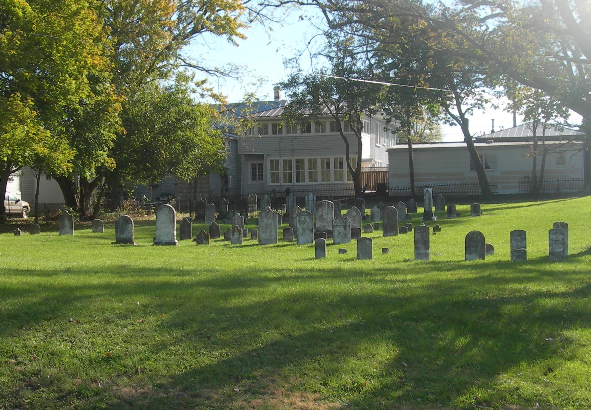

Rear Lot of 5271 Main Street (accessed from Germain Street, adjacent to the Stephens City United Methodist Church parking lot)
By 1790 the Methodists built a log structure here for their meetings. By 1827 the old log meeting house was torn down and a brick one was built on the same ground. In her book Early Days and Methodism in Stephens City, Virginia Inez Virginia Steele wrote in 1906 the following about that first brick chapel:
The new church had galleries at the sides and end (the end one being reserved for the colored people), two stairways, two side doors opening at the foot of the stairways, and two front doors. The northern door and that side of the church were used exclusively by the men, the other side by the women. Promiscuous sitting was not allowed, if it was attempted — "The gentlemen will please take their seats on the other side of the church” was heard from the pulpit.
This church building was damaged, and its pews torn out, during the Civil War when it was used as a field hospital after the Battle of Cedar Creek. Miss Steele went on to relate the following:
By 1882 the church had become so dilapidated that it was considered unsafe as well as uncomfortable to worship in; it was accordingly torn down, enlarged and rebuilt.
This building was replaced in 1915 with the current Stephens City United Methodist Church to the south at 5291 Main Street. This Methodist graveyard contains the graves of some of the town’s prominent citizens including John Bell Tilden, a veteran of the Revolutionary War and an early Methodist minister who freed his slaves in April of 1806.